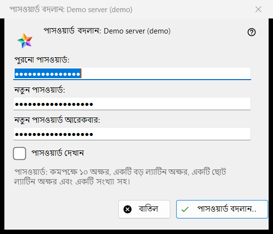
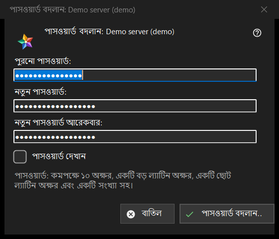

পাসওয়ার্ড বদলান
এটি কীসের জন্য
একটি এক্সচেঞ্জ সার্ভারে আপনার অ্যাকাউন্টের পাসওয়ার্ড বদলায়। এটি রিসোর্স তালিকার আমার ডিভাইস অংশে সার্ভার এন্ট্রির পাসওয়ার্ড বদলান.. বোতাম থেকে খোলে; ওই সার্ভার অনলাইন থাকলেই বোতামটি দেখা যায়। শিরোনামে অ্যাকাউন্টের নাম থাকে।


এই ক্রমে
- পুরনো পাসওয়ার্ড টাইপ করুন।
- নতুন পাসওয়ার্ড দুবার টাইপ করুন।
- পাসওয়ার্ড বদলান.. চাপুন; বাতিল উইন্ডো বন্ধ করে এবং কিছু পাঠায় না।
উপাদানসমূহ
তিনটি ঘর
পুরনো পাসওয়ার্ড, নতুন পাসওয়ার্ড এবং নতুন পাসওয়ার্ড আরেকবার; পাসওয়ার্ড দেখান সেগুলো দেখায়। উইন্ডো বন্ধ হলে বাক্সগুলো মুছে ফেলা হয়। উইন্ডো শুধু পাসওয়ার্ড সংগ্রহ করে: ভিউয়ার সেগুলো ওই এন্ট্রির সংযোগের মাধ্যমে সার্ভারে পাঠায়।
পাসওয়ার্ডের নিয়ম
টীকা বলে: কমপক্ষে 10 অক্ষর, একটি বড় ও একটি ছোট ল্যাটিন অক্ষর এবং একটি সংখ্যা। কিছু পাঠানোর আগে উইন্ডো তা যাচাই করে এবং যে অংশ মেলেনি তার নাম বলে, যেমন (পাসওয়ার্ড ১০ অক্ষরের চেয়ে ছোট।) বা (পাসওয়ার্ডে কোনো সংখ্যা নেই।); এছাড়া সে বলে (পুরনো পাসওয়ার্ড দিন।) এবং (দুটি পাসওয়ার্ড মেলেনি।) সার্ভার একই নিয়ম প্রয়োগ করে এবং শেষ কথা তার।
বদলানোর পর
সফল হলে অবস্থা বলে: পাসওয়ার্ড বদলে গেছে। এই কম্পিউটার কাজ করতেই থাকবে, আর অ্যাকাউন্টের অন্য ডিভাইসগুলোকে আবার সাইন-ইন করতে হবে। প্রত্যাখ্যানের কারণ: পুরনো পাসওয়ার্ড মেলেনি; অনেক বেশি চেষ্টা (এক মিনিট অপেক্ষা করে আবার চেষ্টা করুন); সার্ভার পরিবর্তন প্রত্যাখ্যান করেছে; সার্ভারের সঙ্গে সংযোগ নেই (সংযুক্ত হয়ে আবার চেষ্টা করুন)।